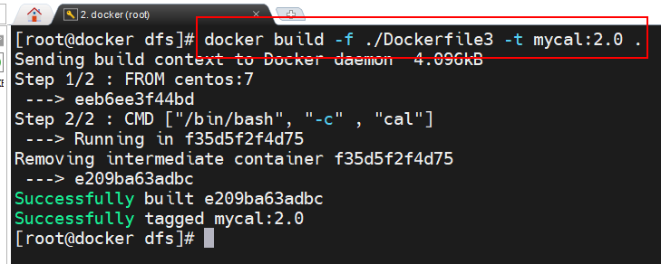
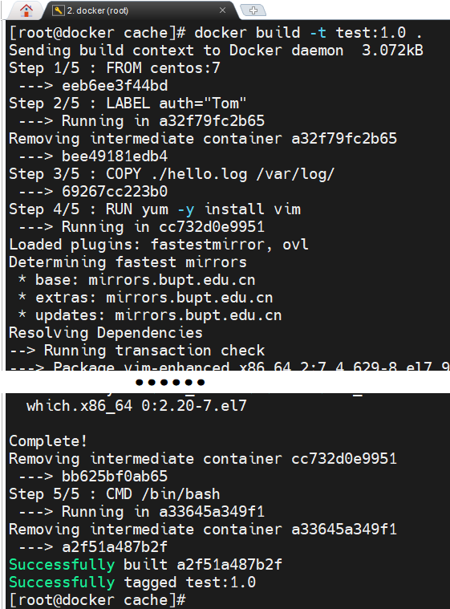
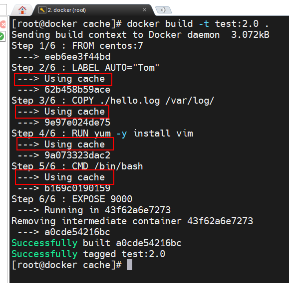
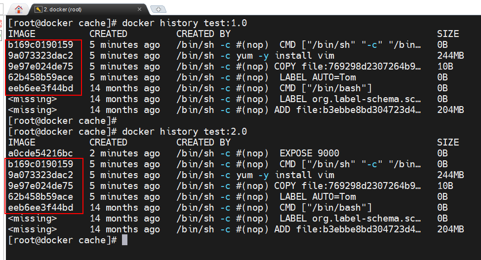
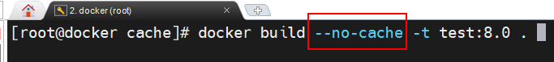

Dockerfile 简介
Dockerfile 是用于构建 Docker 镜像的脚本文件，由一系列指令构成
通过docker build命令构建镜像时，Dockerfile 中的指令会由上到下依次执行，每条指令都将会构建出一个镜像层
因此，指令越多，层次就越多，创建的镜像就越多，效率就越低
对于 Dockerfile 的指令，需要注意以下几点：
- 指令是大小不敏感的，但惯例是写为全大写
- 指令后携带参数
- # 号开头的行为注释
- 能在一个指令完成的动作就不要分为两条
指令
FROM
复用基础镜像，唯一一定不会新添加镜像层的指令
1
2
3
|
FROM < image >[:< tag >]
// 用于指定基础镜像，且必须是第一条指令；若省略了 tag，则默认为 latest
// scratch 镜像是一个空镜像；只能在 Dockerfile 中被继承，不能通过 pull 命令拉取，不能 run，也没有 tag。并且它也不会生成镜像中的文件系统层
|
MAINTAINER / LABEL
修改镜像 json 元数据文件
通过 docker inspect 可查看到 LABEL 与 MAINTAINER 的内容
1
2
3
4
5
6
|
MAINTAINER <name>
// 参数填写的一般是维护者姓名和信箱。不过，该指令官方已不建议使用，而是使用 LABEL 指令代替
LABEL <key>=<value> <key>=<value> ...
// 以键值对的方式包含任意镜像的元数据信息，用于替代MAINTAINER 指令。
|
ENV / ARG
1
2
3
4
5
6
7
8
|
ARG < varname >[=<default value>]
// 用于定义一个变量，可以用于镜像构建运行时被其他指令如RUN使用。若要定义多个变量，则需要定义多个 ARG 指令
// 在docker build 时可指定--build-arg stringArray 传入变量值
ENV <key> <value>
ENV <key1>=<value1> <key2>=<value2> ...
// 用于指定环境变量，可以用于镜像构建运行时被其他指令如RUN使用，也可以在容器中获取这些环境变量
|
WORKDIR
1
2
3
4
5
|
WORKDIR path
// 容器打开后默认进入的目录，在后续的 RUN、CMD、ENTRYPOINT、ADD 等指令中会引用该目录
// 可以设置多个 WORKDIR 指令。后续 WORKDIR 指令会基于之前 WORKDIR 指令指定的路径
// 在使用 docker run 运行容器时，可以通过-w 参数覆盖构建时所设置的工作目录
|
RUN / CMD / ENTRYPOINT
| 指令 |
执行时机 |
用途 |
RUN |
构建镜像时 |
安装软件、执行命令,结果固化进镜像层；用 && 合并命令减少层数 |
CMD |
容器启动时 |
定义容器默认运行的命令,可被 docker run 后面的参数覆盖 |
ENTRYPOINT |
容器启动时 |
定义容器固定默认运行的命令,不易被覆盖 |
- 无论是 CMD 还是 ENTRYPOINT，使用[“EXECUTABLE”]方式的通用性会更强些
- docker run [OPTIONS] IMAGE [COMMAND] [ARG…]
- CMD可以自己指定[COMMAND] [ARG…]，第一个参数一定为[COMMAND]
- ENTRYPOINT不能指定 [COMMAND] ，默认全是[ARG…]
- 如果是[command]指定的 shell不会与 docker run 中的[ARG]进行拼接后运行
- 如果是[“EXECUTABLE”]指定的命令，daemon 则会先与 docker run 中的[ARG]进行拼接，然后再运行拼接后的结果。
1
2
3
4
5
|
RUN <command>
RUN ["EXECUTABLE","PARAM1","PARAM2", ...]
// docker build 执行过程中调用
--- shell 指定的 command
--- "EXECUTABLE"指定的应用程序，并使用后面参数作为应用程序的运行参数
|
1
2
3
4
5
6
7
8
|
CMD ["EXECUTABLE","PARAM1","PARAM2", ...]
CMD command param1 param2, ...
// 在容器启动后，即在执行完 docker run 后会立即调用
-- "EXECUTABLE"指定的可执行文件，并使用后面参数作为应用程序的运行参数
-- command指定的 shell 命令
CMD ["PARAM1","PARAM2", ...]
// ENTRYPOINT 固定程序,CMD 提供默认参数
|
1
2
3
4
5
6
|
ENTRYPOINT ["EXECUTABLE","PARAM1","PARAM2", ...]
ENTRYPOINT command param1 param2, ...
// 在容器启动后，即在执行完 docker run 后会立即调用
--- "EXECUTABLE"指定的可执行文件，并使用后面参数作为应用程序的运行参数
--- command指定的 shell 命令
|
EXPOSE
1
2
3
|
EXPOSE <port> [<port>...]
// 可用于指定容器内服务运行的端口号
// 也可用于指定推荐暴露的端口号，实际暴露仍需 -p 指定
|
ADD / COPY
1
2
3
4
5
6
7
8
9
10
11
12
13
14
|
ADD <src> <dest>
ADD ["<src>", "<dest>"] # 路径中存在空格时使用双引号引起来
// 该指令将复制当前宿主机中指定文件/目录 src 到容器中的指定目录 dest 中
--- dest 是一个绝对路径，其最后面的路径必须要加上斜杠
--- src 可以是宿主机中的绝路径，也可以时相对路径(相对于 docker build 命令所指定的路径)
--- src 可以是一个压缩文件，会自动解压为目录
--- src 也可以是一个 URL，此时的 ADD 指令相当于 wget 命令
COPY <src> <dest>
// 功能与 ADD 指令相同
--- src 不能是 URL。
--- src 为压缩文件，复制到容器后不会自动解压
|
ONBUILD
1
2
|
ONBUILD [INSTRUCTION]
// 该指令用于指定使用当前镜像构造子镜像时要执行的指令，当前镜像不会触发
|
VOLUME
1
2
|
VOLUME ["dir1", “dir2”, ...]
// 在容器声明挂载点，宿主机数据卷位置自动指定
|
docker build 命令
1
2
3
4
5
6
7
8
9
10
|
docker build [OPTIONS] PATH | URL | -
-t, --tag 给镜像命名打标签
-f, --file 指定 Dockerfile 路径与文件名(默认找PATH | URL 目录的 Dockerfile)
--build-arg 构建时传入变量,配合 Dockerfile 里的 ARG
--no-cache 不用缓存,全部重新构建(排查问题时常用)
--pull 强制拉取最新的基础镜像
-q, --quiet 静默模式,只输出最终镜像 ID
--platform 交叉构建其他架构的镜像
--target 多阶段构建时,只构建到指定阶段
|

最后的点( . )是一个宿主机当前路径
- 构建镜像时会默认从该路径中查找 Dockerfile 文件
- 同时该路径也是在 Dockerfile 中 ADD、COPY 指令中使是用的相对路径
一般 dockefile文件 与 add/copy的文件 应该放在同一个目录下
build cache及镜像构造过程
Docker Daemnon 通过 Dockerfile 构建镜像时，当发现即将新构建出的镜像(层)与本地已存在的某镜像(层)重复时，默认会复用已存在镜像(层)而不是重新构建新的镜像(层)，这种机制称为 docker build cache 机制。
- 加快了镜像的构建过程
- 大量节省了Docker 宿主机的空间。
docker build cache 是一种对磁盘中相应镜像层的检索、复用机制。只要该镜像(层)存在于本地，那么就会复用
Docker 镜像的构建过程，大量应用了镜像间的父子关系。即下层镜像是作为上层镜像的父镜像出现，上层镜像是在下层镜像的基础之上变化而来。
镜像层文件系统或其 JSON 文件内容发生了变化，就会产生新的镜像层，生成新的镜像 ID
1
2
3
4
5
|
FROM centos:7 //不会产生新的镜像层，使用指定的镜像作为基础镜像层
LABEL auth="Tom" //修改上一步中提取出的镜像 json 文件，生成新的镜像层
COPY hello.log /var/log/ //改变该镜像层文件系统，生成新的镜像层
RUN yum -y install vim //RUN 指令本身并不会改变镜像层文件系统大小，但由于其 RUN 的命令改变了镜像层文件系统，产生了新的镜像层
CMD /bin/bash //该条指令写入到 json 文件中，会引发 json 文件的变化，产生了新的镜像层
|

再次构建指令以及父镜像层相同的镜像层会使用build cacha，而且拥有相同的镜像号


build cache 失效
- Dockerfile 某个指令内容发生变化，那么从发生变化的这个指令层开始以及所有子镜像层 cache 全部失效
- Dockerfile 文件内容没有变化，但 ADD 或 COPY 指令所复制的文件内容发生了变化，发生变化的这个指令层开始以及所有子镜像层 cache 全部失效
- Dockerfile 文件内容没有变化，但 RUN 命令的外部依赖发生了变更(版本变化、下载地址变化等)，发生变化的这个指令层开始以及所有子镜像层 cache 全部失效
- 指定不使用 build cache确保在镜像构建过程中使用到新的数据
